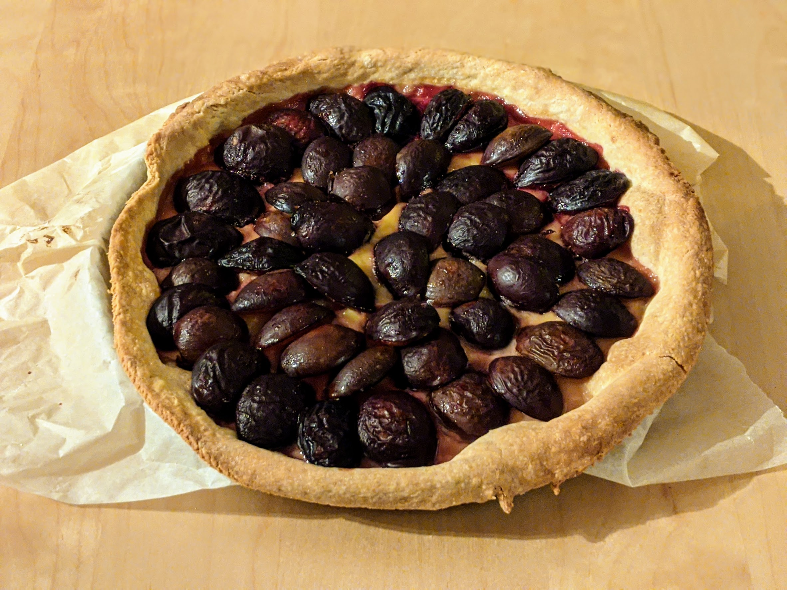

Tarte aux prunes

Pour une tarte (entre 4 et 6 personnes) :
- Une pâte brisée
- 700g de prunes (préférablement des reines-claudes)
- 75g de sucre
- 2 œufs
- 100g de crème épaisse
- Préchauffer le four à 180°C. Étaler la pâte dans un plat à tarte, la piquer de partout, et la faire cuire à blanc quelques minutes (jusqu'à ce que ça dore), en surveillant que ça ne gonfle pas.
- Pendant ce temps, couper les prunes en deux et les dénoyauter. Mélanger les œufs, le sucre et la crème fraîche.
- Une fois que la pâte est cuite, verser le mélange par-dessus et disposer les prunes par-dessus. Enfourner une demi-heure, servir tiède ou refroidi.
Remarque : juste avant de l'enfourner, on peut saupoudrer la tarte de cassonade pour que ça caramélise un peu. Alternativement, on peut la meringuer — comme ça n'est pas une tarte très sucrée, ajouter une meringue est une bonne idée.